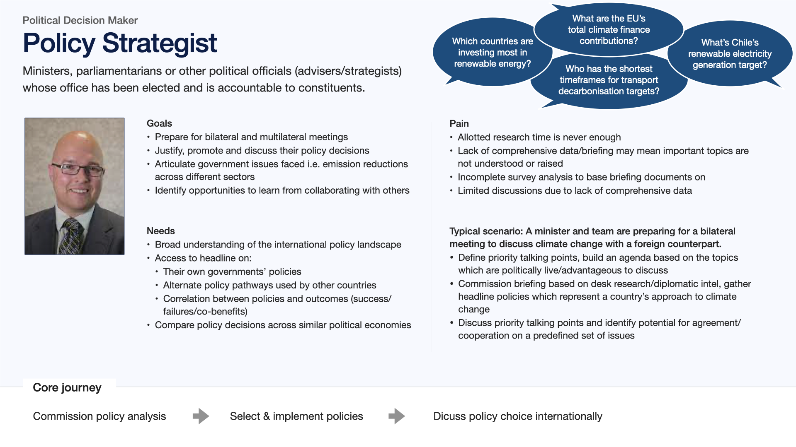

Background
An initial alpha product had been created by a data science and development team proving that the technology could work. With
limited user discoveries incorporated into the design process. Relying instead on first-hand experiences, collective assumptions amongst the team and best endeavours UI design work.
Establishing a user research strategy
Some team members had a broad research background and strong opinions but limited access to actual users to understand their context and obtain feedback.
Relying on ad-hoc, limited access to peers in the wider community, with no formal user engagement process established.
Initial goals
- Understand the type of work users do (e.g. a policymaker, an academic)
- What questions are they trying to answer
- How they work and where they encounter challenges
- What could make the tools more useful to them
Discoveries
- Users are typically knowledge workers who need to answer research questions as part of their jobs
- Their roles includes civil servant policy analysts, NGO researchers, PhD students, risk modellers and scientific advisors
- Problems encountered are limited time available to conduct research, having to consult multiple sources and manually extract data from long
policy documents that are written in multiple languages
- Preparing for key events, like the annual COP summit, hundreds of documents are released just before the event that need synthesising quickly
Created personas to provide focus
Many user types were identified, to provide focus I grouped each by similar needs and goals into 2 main
personas: Researcher and Political Decision-Maker.
This overcame challenges encountered regarding:
- Multiple user types to consider when designing
- Mixed opinions amongst the team about who the users were and their needs
- A stanrdard means of communication: internally amongst the project team and externally with partners


Key personas were identified as the main focus, covering the widest range of needs, behaviours and differing levels of engagement.